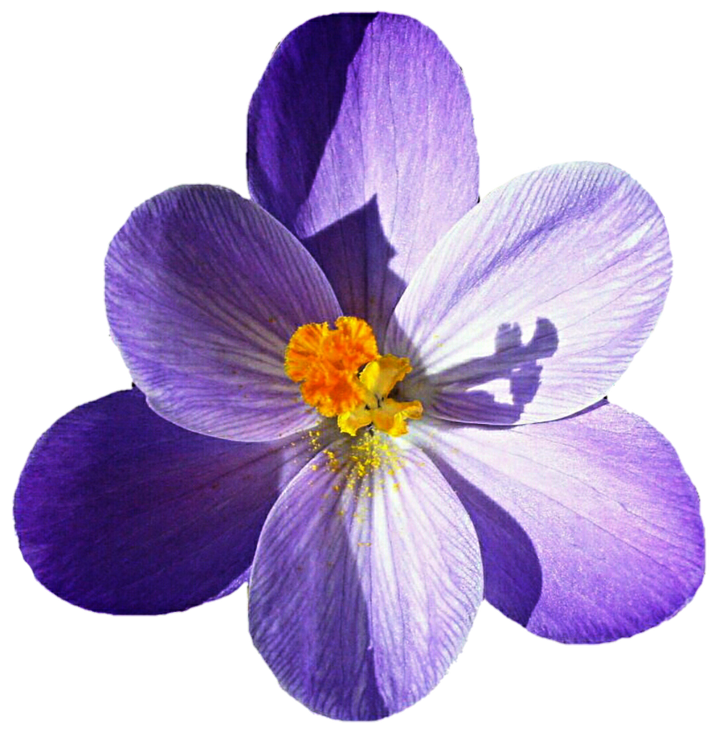

Lisää kukasta
Kuvassa on keijunokkonen eli gazania (Gazania), todennäköisesti loistogazania (Gazania rigens). Sen tunnistaa erityisesti oransseista terälehdistä ja terälehtien tyvellä olevasta tummasta renkaasta. Suomessa sitä kasvatetaan yleensä kesäkukkana.
Suuret, päivänkakkaraa muistuttavat kukat voivat olla oransseja, keltaisia, punaisia tai valkoisia. Kuvassa oranssi, tumma rengas terälehtien tyvellä on gazanialle hyvin tyypillinen.
Kastelu: Gazania kestää melko hyvin kuivuutta. Multa saa kuivahtaa kastelujen välillä, liian märkä kasvualusta on sille haitallisempi kuin hetkellinen kuivuus. Ja kukinta hyvällä aurinkoisella paikalla voi jatkua pitkälle kesään ja syksyyn.